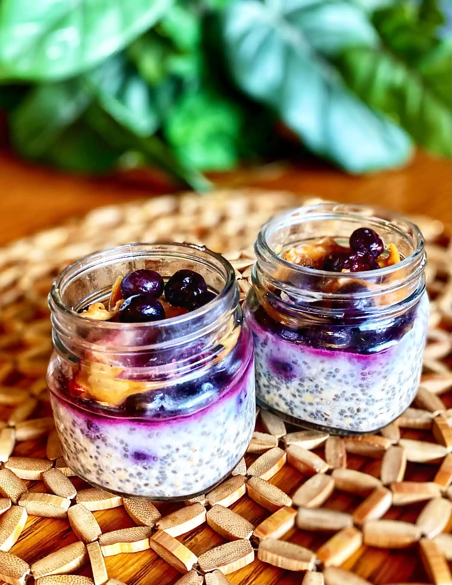

Overnight Oats with Blueberries, Peanut Butter, and Protein Powder

Ingredients:
- ¾ cup almond milk
- ½ cup oats
- 2 tablespoons peanut butter
- 2 tablespoons chia seeds
- 2 tablespoons agave nectar
- 1 scoop vanilla protein powder
- 1 cup frozen blueberries
Steps:
- Mix almond milk, oats, peanut butter, chia seeds, agave, and protein powder in a bowl until well combined.
- Divide mixture between 2 Mason jars.
- Top each jar with 1/2 cup blueberries.
- Refrigerate for 8 hours, or overnight.
Other Pages: